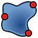
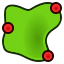

Feature editing/pt-br
Introdução
This page explains the feature editing workflow of the  PartDesign Workbench.
PartDesign Workbench.
Body
Trabalhar no PartDesign requer primeiro a criação de um Corpo. O Corpo é um contêiner destinado a armazenar um único sólido contíguo. Quando um Corpo é criado, um objeto de Origem (Origin) — um sistema de coordenadas local composto por planos de referência padrão (XY, XZ, YZ) e eixos (X, Y, Z) — é adicionado automaticamente. O sólido é então construído pela adição de operações. Cada operação é cumulativa e adiciona ou subtrai do resultado da operação anterior.
{kind=link}
{kind=link}
Feature editing in practice. From left to right:
Body with a box feature.
Body with a box and a chamfer feature.
Body with a box, a chamfer and a pocket feature.
Um documento pode conter múltiplos Corpos, mas apenas um Corpo pode estar ativo. Novas operações são adicionadas ao Corpo ativo. Um Corpo pode ser ativado ou desativado com um duplo clique na Árvore de modelos. O Corpo ativo é destacado na Árvore de modelos.
{kind=link}
O que é um sólido contíguo?
A contiguous solid is an object like a casting or something machined from a single block of metal. If the object involves nails, screws or glue, it is not a contiguous solid. As a practical example, a wooden chair would be made of multiple Bodies, with one for each of its sub-components (legs, slats, seat, etc).
Na versão 1.0 do FreeCAD, foi introduzida uma propriedade experimental que permite que o Corpo tenha sólidos não contíguos. Isso também pode ser definido nas Preferências como padrão para Corpos recém-criados. Isso não se destina a ser usado para construir, como no exemplo, uma cadeira em um único Corpo. Destina-se a permitir operações que possam gerar sólidos desconectados, que serão tornados contíguos por operações posteriores.
When a model requires multiple Bodies, like the wooden chair, the general purpose  Part container can be used to group them and move the whole as a unit.
Part container can be used to group them and move the whole as a unit.
Gerenciamento da visibilidade do Corpo(body)
Por padrão, um Corpo apresenta sua operação mais recente ao exterior. Essa operação é o Tip do Corpo. O Tip também indica a posição onde novas operações são adicionadas. É possível redefinir temporariamente o Tip para uma operação intermediária no Corpo, a fim de inserir novos objetos (operações, esboços ou geometria de referência) nesse ponto. À medida que uma nova operação é adicionada ao Corpo, a visibilidade da operação anterior é desativada, e a nova operação passa a ser o Tip.
There can only be one feature visible at a time. It is possible to toggle the visibility of any feature in the Body, by selecting it in the Tree view and pressing the Spacebar, in effect going back in the history of the Body. Note that changing the visibility of features does not change the Tip of the Body.
Movendo e reordenando objetos
The features of a Body can be reordered, or moved to a different Body. Select the feature and right-click to get a context menu that offers both options. The operation may be prevented if the object has dependencies in the source Body, such as being attached to a face. To move a sketch to another Body, it should not contain links to external geometry.
{kind=link}
Schematic representation of the PartDesign workflow.
Datum geometry
Datum geometry consists of custom planes, lines, points or externally linked shapes. They can be created for use as reference by sketches and features. There are many attachment options for datum objects.
In FreeCAD, datum planes make sense if you are placing sketches in non-standard orientations, that is, on planes offset or rotated around the three main axes. But since sketches can also be placed in non-standard orientations and have the same attachment options as datum planes, there is often no need to use them. Datum planes make the most sense if there is more than one sketch with the same non-standard orientation. Adjusting the orientation of the datum plane will then adjust all associated sketches and the features created from those sketches.
Although FreeCAD version 1.0 already has code to mitigate the topological naming problem, it is still best practice to attach both sketches and datum planes to the base planes of the Body's Origin whenever possible. Referencing generated geometry (geometry that is the result of a feature operation, for example a pad or pocket) may yet result in less stable models. See Advice for creating stable models below.
Advice for creating stable models
The idea of parametric modeling implies that you can change the values of certain parameters and subsequent steps are changed according to the new values. However, when severe changes are made, the model can break due to the topological naming problem. Breakage can be minimized if you respect the following design principles:
- Avoid attaching sketches and custom datum geometry to generated geometry, that is any face, edge or vertex, of the model's solid. Attach them to the standard planes/axes of the Origin of the Body instead. Sketches attached to standard planes/axes or to datum geometry attached to standard planes/axes, will not get unexpectedly reattached to a different reference. Use attachment offsets as needed.
- Use a "master sketch". Since a master sketch is done before the rest of the model, it can only reference the standard planes/axes.
- A master sketch should be as simple as possible, containing the basic geometric elements of your model.
- Master sketch elements can be referenced when modelling subsequent features.
- A master sketch can be the first sketch in the Body, or outside the Body completely. In the first case it can be referenced directly as external geometry, in the latter it can be referenced via a

ShapeBinder or
SubShapeBinder.
- Don't create (Sub)ShapeBinders from generated geometry. Keep in mind that (Sub)ShapeBinders can be an issue if geometry is deleted from the sketch it is based on.
- Always first try to reference a sketch, or sketch geometry, rather than generated geometry. If you inevitably have to reference generated geometry, use the first feature where the element to be referenced occurs. Changes to later steps then won't break your model.
- Use dress ups, like fillets and chamfers, as late in the feature tree as possible.
{kind=link}
{kind=link}
Tutorials
The tutorials page provides some examples of using the feature editing method of the PartDesign Workbench.
Related
- Helper tools: New Body, New Sketch, Attach Sketch, Edit Sketch, Validate Sketch, Check Geometry, Sub-Shape Binder, Clone
- Modeling tools:
- Additive tools: Pad, Revolution, Additive Loft, Additive Pipe, Additive Helix, Additive Box, Additive Cylinder, Additive Sphere, Additive Cone, Additive Ellipsoid, Additive Torus, Additive Prism, Additive Wedge
- Subtractive tools: Pocket, Hole, Groove, Subtractive Loft, Subtractive Pipe, Subtractive Helix, Subtractive Box, Subtractive Cylinder, Subtractive Sphere, Subtractive Cone, Subtractive Ellipsoid, Subtractive Torus, Subtractive Prism, Subtractive Wedge
- Boolean: Boolean Operation
- Dress-up tools: Fillet, Chamfer, Draft, Thickness
- Transformation tools: Mirror, Linear Pattern, Polar Pattern, Multi-Transform, Scale
- Additional tools: Shape Binder, Involute Gear, Sprocket, Shaft Design Wizard
- Context menu: Suppressed, Set Tip, Move Object To…, Move Feature After…
- Preferences: Preferences, Fine tuning
- Getting started
- Installation: Download, Windows, Linux, Mac, Additional components, Docker, AppImage, Ubuntu Snap
- Basics: About FreeCAD, Interface, Mouse navigation, Selection methods, Object name, Preferences, Workbenches, Document structure, Properties, Help FreeCAD, Donate
- Help: Tutorials, Video tutorials
- Workbenches: Std Base, Assembly, BIM, CAM, Draft, FEM, Inspection, Material, Mesh, OpenSCAD, Part, PartDesign, Points, Reverse Engineering, Robot, Sketcher, Spreadsheet, Surface, TechDraw, Test Framework
- Hubs: User hub, Power users hub, Developer hub